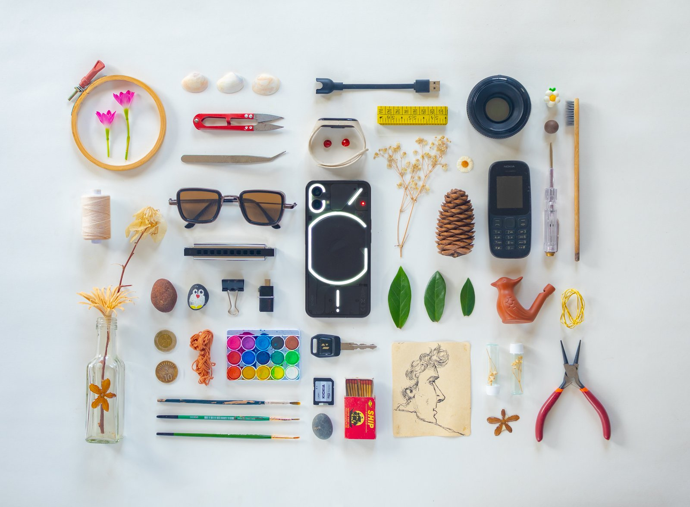

Nothing Flat-lay Photography Challenge
This was a fun contest I took part in, which happened on Nothing.tech's Discord channel. The premise, as the title says, was to create a flat lay photograph that includes a Nothing product. Without any hesitation, I said yes to the challenge, and this is the image I made.

I used the Nothing Phone (1) as my subject for the shoot. Instead of going with a tech theme for the surrounding elements, I went to the other end of the spectrum. I tried to fill it with things that I see in my everyday life, which isn't much tech, to be honest. The final result ended up being closer to my heart and something I can resonate with. Also, this image ended up being the best one and won Nothing Ear (2) as a prize.
Here is some BTS of the shoot, which was shared by Rob Godwin, the community manager and host of the contest.